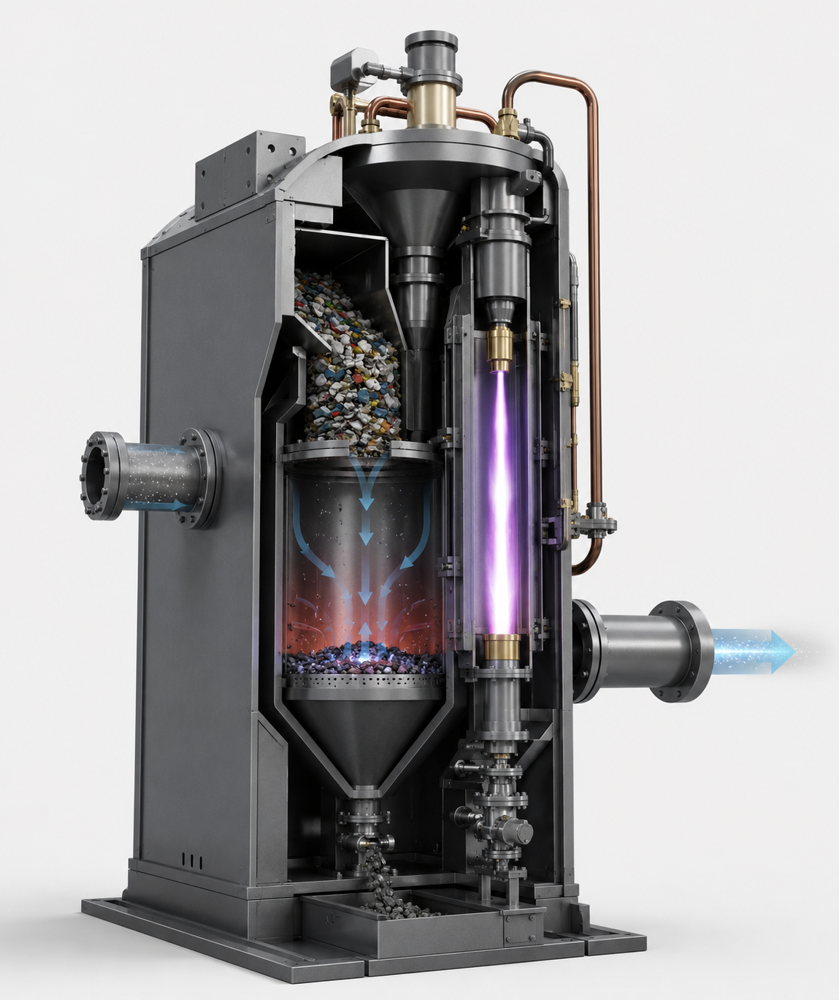
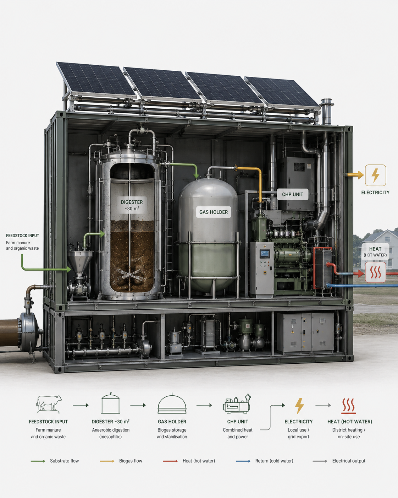

Modular energy technologies for decentralised infrastructure
Future Cycle develops and coordinates clean-energy technologies focused on waste conversion, resilient local energy generation and containerised deployment.
Re-Power Ukraine
Compact plasma-assisted waste-to-energy system for mixed waste streams.

Technology overview
Re-Power Ukraine is a compact plasma-assisted waste-to-energy system designed to convert mixed waste streams into high-calorific syngas.
Unlike conventional incineration systems, the technology is based on gasification and pyrolysis processes aimed at maximising usable gas output while reducing residual waste volumes.
The project is focused on creating a transportable container-based unit suitable for rapid deployment in locations with limited access to stable energy infrastructure.
Technology highlights
- Compact container-sized architecture
- Syngas generation for CHP systems
- Mixed-waste processing capability
- Reduced transport and installation requirements
- Scalable modular deployment
- Potential heat and electricity generation
- Construction-grade slag by-product
Current stage
Prototype development, pilot deployment preparation and field validation activities in Ukraine. The project is focused on advancing the technology toward commercially deployable modular systems.
BioSolar Nexus
Modular biogas infrastructure for farms, households and cold-climate regions.

Technology overview
BioSolar Nexus is a modular anaerobic digestion system developed for farms and decentralised energy applications.
The system converts manure and organic waste into biogas, electricity, heat and nutrient-rich digestate fertiliser.
The platform is specifically engineered for colder climates using insulated reactor systems, integrated heat recovery and modular container-based deployment.
Technology highlights
- Containerised modular deployment
- Integrated CHP electricity and heat generation
- ~30 m³ insulated anaerobic digester
- Biogas storage and gas-holder integration
- PVT-assisted thermal support systems
- Heat recovery for buildings and infrastructure
- Digestate as nutrient-rich fertiliser
Current stage
Pilot-system engineering, operational modelling and infrastructure validation for deployment in agricultural and decentralised energy scenarios.